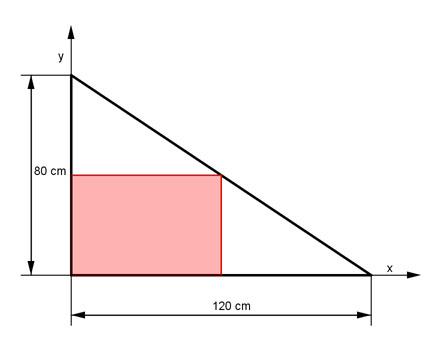
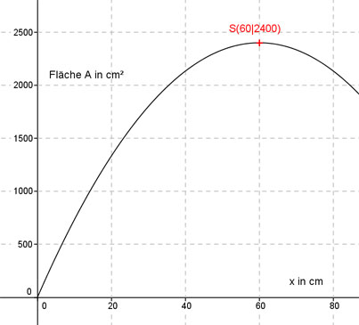

Aufgabe 140 Welchen Flächeninhalt A hat das größtmögliche Rechteck, das man aus dem Blechteil abtrennen kann?  Bestimmung der Funktionsgleichung für die schräg verlaufende Gerade: Allgemein: y = mx + b b, den Schnittpunkt mit der y-Achse, kann man ablesen: b = 80 Steigung m: m ist negativ, die Gerade fällt: 80 2 m = - ------ = - --- 120 3 oder P1(0|80), P22(120|0) abgelesen y2 - y1 0 - 80 80 2 m = --------- = --------- = - ------ = - --- x2 - x1 120 - 0 120 3 2 y = - --- x + 80 3 Die längere Seite des Rechtecks sei x 2 Die andere ist - ---x + 80 3 Die Fläche A des Rechtecks ist: 2 A(x) = x * (- --- x + 80) 3 2 A(x) = - --- * x2 + 80x 3 Dies ist die Funktionsgleichung einer nach unten geöffneten, gestauchten Parabel, deren höchster Punkt der Scheitelpunkt ist. 2 2 A(x) = - --- * x2 + 80x |:(- ---) 3 3 3 - --- * A(x) = x2 - 120x 2 Quadratische Ergänzung: 3 - --- * A(x) = x2 - 120x + 3 600 - 3 600 2 mit x2 - 120x + 3600 = (x - 60)2 3 2 - --- * A(x) = (x - 60)² - 3 600 |*(- ---) 2 3 2 A(x) = - --- (x - 60)2 + 2 400 3 Scheitelpunkt abgelesen: S(60|2400) Die Scheitelpunktkoordinaten bedeuten: Wird die Länge x = 60 cm gewählt, dann entsteht die größte Fläche A = 2 400 cm². 